ディスコードの宣伝、貼れる場所は4種類。
「宣伝サーバー」「宣伝鯖」「宣伝掲示板」「宣伝サイト」——検索して出てくる言葉はバラバラですが、実際に存在する場所は4種類です。仕組みも、残り方も、見ている人も違います。
SCROLL TO EXPLORE
4種類の、貼れる場所。
流れる場所と、残る場所。同じ「宣伝」でも性質がまるで違うので、片方だけでは足りません。
宣伝サーバー（宣伝鯖）
投稿してよいと決められたDiscordサーバー。ジャンル別の部屋に紹介文と招待リンクを貼ります。速いかわりに、チャットとして流れます。
仕組みを見る→宣伝掲示板
Web上のサーバー紹介の掲示板。投稿が一覧として残り、後から来た人が読めます。Discordを使っていない人にも届きます。
仕組みを見る→サーバー一覧サイト
ジャンル・タグ・人数で探せるサイト。検索エンジンから直接ここへ人が来ます。バンプで上位へ押し上げられます。
仕組みを見る→宣伝用サーバーを作る
自分で宣伝サーバーを開く方法。ルールを自分で決められますが、宣伝する人しか集まらないため最初の1つには向きません。
理由を見る→SECTION 01ディスコードの宣伝サーバー（宣伝鯖）とは
宣伝サーバーとは、自分のサーバーの招待リンクを投稿してよい、と決められているDiscordサーバーのことです。Discordには「新しいサーバーを一覧で見せる」公式の仕組みがほとんど無いため、作ったばかりのサーバーは誰の目にも触れません。その状態を解消するために、運営者同士が集まって宣伝を許可し合っている場所が宣伝サーバーです。
宣伝サーバーの仕組み
やることは単純で、宣伝専用のチャンネルに、紹介文と招待リンクを投稿するだけです。参加も投稿も無料のところがほとんどで、アカウント以外に必要なものはありません。
- 宣伝サーバーに参加する
- ルールのチャンネルで投稿間隔と禁止事項を読む
- ジャンルに合った宣伝チャンネルを選ぶ
- 紹介文＋招待リンクを投稿する
- 決められた時間が経ったら、また投稿する
「宣伝鯖」と呼ばれる理由
「鯖」はサーバーの俗称です。読みが同じことから当て字として定着しました。「宣伝サーバー」「宣伝鯖」「宣伝用サーバー」は、どれも同じものを指しています。検索する人によって書き方が変わるだけなので、どの言葉で探しても行き着く先は同じです。
宣伝専用チャンネルの見分け方
宣伝サーバーに入ったら、まずチャンネル名を見てください。「宣伝」「PR」「promo」「advertise」「鯖宣伝」といった名前が付いています。カテゴリごとに分かれている場合は、その下にジャンル別の部屋が並んでいます。
雑談チャンネルに貼らないでください。宣伝が許可されているサーバーでも、許可されているのは宣伝チャンネルの中だけです。雑談に貼ると、その場で削除されるか、BANの対象になります。
投稿間隔のルール
ほとんどの宣伝サーバーには投稿間隔のルールがあります。よくあるのは「1時間に1回」「6時間に1回」「12時間に1回」「24時間に1回」といった形で、サーバーごとに違います。この間隔を守らない投稿は削除・警告・BANの対象になります。
間隔が短いサーバーほど投稿が速く流れるため、上に居られる時間も短くなります。逆に24時間に1回のサーバーは、投稿が長く残ります。「何時間に1回か」は、そのまま「どれだけ長く見てもらえるか」に直結します。
ジャンル別の部屋
規模の大きい宣伝サーバーでは、部屋がジャンルで分かれています。よくある分け方は次の通りです。
- ゲーム／FPS／MMO／マインクラフト
- 雑談／交流／通話
- 創作／イラスト／音楽／動画
- 技術／プログラミング／AI
- VTuber／配信／リスナー募集
- その他・ジャンル問わず
合わない部屋に貼ると、読まれないだけでなく削除されます。自分のサーバーがどのジャンルかを1つ決めてから貼ってください。
宣伝サーバーで見ているのは誰か
ここは正直に書いておきます。宣伝サーバーを見ているのは、同じく宣伝しに来た運営者が中心です。純粋に「面白いサーバーを探しに来た人」の割合は高くありません。
だからといって無意味ではありません。運営者同士は相互にサーバーを見に行く習慣があり、立ち上げ直後の「最初の10人」を集める場所としては現実的に機能します。ただし「宣伝サーバーに貼れば一般の人が大量に来る」という期待は、実態と合いません。
宣伝サーバーの長所と短所
すぐ結果が出る
投稿した直後に見られます。立ち上げ当日から人が来ることがあるのは、この方法だけです。
数を打てる
宣伝サーバーは複数あります。ルールを守る範囲で、いくつも並行して使えます。
投稿が流れる
チャットなので下へ押し流されます。貼り続けないと存在しないのと同じになります。
検索には出ない
Discordの中の投稿はGoogleに載りません。外から探している人には届きません。
SECTION 02ディスコードの宣伝掲示板とは
宣伝掲示板とは、Web上にあるサーバー紹介の掲示板です。Discordの中ではなく外にあります。この違いが、そのまま性質の違いになります。
宣伝掲示板の仕組み
サイトの投稿フォームに、サーバー名・紹介文・招待リンク・ジャンルを入力して投稿します。投稿は一覧として残り、後から来た人がスクロールして読めます。多くはアカウント登録なしか、簡単な登録だけで投稿できます。
掲示板と宣伝サーバーの違い
| 比べる点 | 宣伝サーバー | 宣伝掲示板 |
|---|---|---|
| 場所 | Discordの中 | Webの上 |
| 投稿の残り方 | チャットとして流れる | 一覧として残る |
| Google検索 | 載らない | 載る |
| 反応の速さ | 速い（当日） | ゆっくり（数日〜） |
| 見ている人 | 運営者が中心 | 探しに来た人 |
| 手間 | 貼り続ける必要がある | 1回置けば残る |
掲示板に載せるときの書き方
掲示板は後から読まれる場所です。チャットのように流れないぶん、読み手はじっくり比べます。だから書き方も変わります。
- 1行目でジャンルを言い切る——「なんでもあります」は選ばれません
- 誰向けかを書く——初心者歓迎／経験者中心／年齢層
- 入ったら何があるかを書く——部屋の名前を3つ挙げるだけでも伝わります
- 更新日が分かるようにする——古い投稿は死んだサーバーだと思われます
宣伝掲示板の探し方
「discord 宣伝 掲示板」「ディスコード 募集掲示板」で検索すると見つかります。掲示板と募集掲示板は近い性質で、サーバーの宣伝とメンバー募集の両方を受け付けているところが多くあります。募集の書き方はメンバー募集のページで詳しく書いています。
SECTION 03宣伝サイト・サーバー一覧サイトとは
サーバー一覧サイトとは、Discordサーバーをジャンル・タグ・人数などで探せるWebサイトです。「宣伝サイト」と呼ばれることもあります。掲示板より構造化されていて、検索エンジンから直接ここへ人が来ます。
サーバー一覧サイトの仕組み
サーバーを登録すると、一覧に並びます。多くのサイトでは専用のBotを自分のサーバーへ招待することで、人数やオンライン数が自動で表示されます。ユーザーはジャンルやタグで絞り込んで探します。
代表的なサイトとしてDisboardがあります。日本語のサーバーも多数登録されていて、タグ検索・レビュー投稿の仕組みを持っています。
タグ（キーワード）の付け方
一覧サイトではタグが検索の入口になります。ここが宣伝の成否を分けます。
- 探される言葉を入れる——自分が使っている呼び方ではなく、探す人が打つ言葉
- 広い語と狭い語を混ぜる——「ゲーム」だけでは埋もれ、狭すぎると誰も打たない
- 枠を使い切る——タグの数に上限があるサイトが多く、余らせる理由がありません
- 関係ないタグを入れない——入ってすぐ抜けられ、評価も下がります
バンプ（bump）とは
バンプとは、自分のサーバーを一覧の上位へ押し上げる操作です。多くの一覧サイトで、一定時間ごとに1回実行できます。Discord内でコマンドを打つ形式と、サイト上のボタンを押す形式があります。
登録しただけで放置すると、後から登録した人に押し下げられていきます。反対に、間隔ごとに押し続けているサーバーは、常に上のほうに居ることになります。宣伝の中でもっとも手間が小さく、効果が読める作業がこれです。
一覧サイトが検索に強い理由
一覧サイトのページはGoogleにインデックスされます。「ディスコード サーバー 探す」「〇〇 サーバー」で検索した人が、まず一覧サイトへ来て、そこから各サーバーへ入ります。Discordの外にいる人へ届く導線は、現実的にここが中心です。
逆に言えば、宣伝サーバーにいくら貼っても、Discordを使っていない人・宣伝サーバーに入っていない人には一生届きません。
無料枠と有料枠
登録・タグ付け・バンプは無料でできるのが基本です。サイトによっては、上部固定・目立つ装飾といった有料枠を用意しています。
無料で反応が無いものは、有料で上に出しても反応しません。紹介文とタグを直すほうが先です。有料枠を検討するのは、無料の範囲でやり切って、内容には手応えがあるのに露出だけが足りない、と判断できてからで間に合います。
登録してから反映されるまで
一覧サイトへの登録自体はすぐ反映されます。ただし検索エンジンに載るまでには時間がかかります。登録した翌日にGoogleで自分のサーバーが出てこなくても、失敗ではありません。バンプを続けながら待ってください。
SECTION 04宣伝用サーバーを自分で作る場合
宣伝用サーバーとは
「discord 宣伝 用 サーバー」で検索する人には2種類います。①既にある宣伝サーバーを探している人 ②自分で宣伝サーバーを作ろうとしている人です。ここでは②について書きます。
自分で作る長所
- 投稿間隔やジャンル分けを自分で決められる
- 集まった運営者と直接つながれる
- 自分のサーバーを常に一番上に置ける
最初の1つには向かない理由
宣伝サーバーには、宣伝したい人しか集まりません。つまり全員が「貼る側」で、「読む側」がいない状態になりやすい構造です。作った直後の宣伝サーバーは、そもそも人が来ないので宣伝の場として機能しません。
最初にやるべきなのは、既にある宣伝サーバーへ投稿することです。自分で宣伝サーバーを作るのは、自分のサーバーがある程度動いてから、という順番のほうが確実です。
SECTION 054種類の違いと使い分け
流れる場所と残る場所
ここまでの4つは、「流れる」か「残る」かで二分できます。
- 流れる：宣伝サーバー（Discord内）——速いが消える
- 残る：宣伝掲示板・サーバー一覧サイト（Web上）——遅いが積み上がる
どちらか片方だけにしないでください。流れる場所だけだと貼り続ける手間が永久に終わらず、残る場所だけだと最初の1人が来るまでが長すぎます。
立ち上げ直後にやること
- サーバーの入口を整える——来た人が最初に見る部屋だけでいい
- サーバー一覧サイトへ登録し、タグを埋める（1回で終わる作業を先に）
- 宣伝サーバーへ投稿する（複数へ・ルールの範囲で）
- バンプを間隔ごとに続ける
人が増えてきた後にやること
人が来始めたら、宣伝の比重を下げて残る場所の質を上げるほうが効きます。紹介文を実態に合わせて書き直し、タグを見直し、掲示板の投稿を更新する。宣伝を増やすより、来た人が抜けない状態を作るほうが、結果的に人数は増えます。そこからは運営の話になります。
ジャンルが特殊な場合
ジャンルが狭い場合、汎用の宣伝サーバーではまず埋もれます。そのジャンル専用の宣伝サーバー・掲示板を探すほうが、母数は小さくても当たります。一覧サイトでタグから逆に辿ると見つかることがあります。探し方はサーバーの探し方で書いています。
SECTION 06貼ってはいけない場所
DMでの宣伝
面識のない相手へのDM宣伝は、スパム行為としてDiscordの利用規約に反します。アカウント停止の対象です。人数が増えないからといって、絶対に手を出さないでください。一度アカウントを失うと、サーバーごと失います。
宣伝が許可されていないサーバー
他人のサーバーの雑談チャンネルに招待リンクを貼る行為は、ほぼ全てのサーバーで禁止されています。即BANされるだけでなく、運営者同士のあいだで名前が残ります。Discordのコミュニティは狭く、一度そういう扱いを受けると、他の場所でも受け入れられなくなります。
規約違反になる書き方
- 年齢制限のある内容を、年齢制限なしの場所に貼る
- 実態と違う紹介文——「〇〇人います」が嘘だと、入った瞬間に分かります
- 他のサーバーを下げる書き方——比較で持ち上げるのは逆効果です
FAQよくある質問
ディスコードの宣伝サーバー（宣伝鯖）とは何ですか？
自分のサーバーの招待リンクを投稿してよいと決められているDiscordサーバーです。宣伝専用のチャンネルがあり、そこへ紹介文と招待リンクを貼ります。ジャンル別に部屋が分かれていることが多く、参加も投稿も無料のところがほとんどです。
宣伝鯖と宣伝サーバーは違うものですか？
同じものです。「鯖」はサーバーの俗称で、読みが同じことから使われています。検索する人によって「宣伝サーバー」「宣伝鯖」「宣伝用サーバー」と書き方が変わるだけで、指しているものは同じです。
ディスコードの宣伝掲示板とは何ですか？
Web上にあるサーバー紹介の掲示板です。Discordの中ではなく外にあるため、投稿が一覧として残り、検索から見つかります。宣伝サーバーの投稿がチャットとして流れるのに対し、掲示板の投稿は置き続けられるという違いがあります。
バンプ（bump）とは何ですか？
サーバー一覧サイトで、自分のサーバーを一覧の上位へ押し上げる操作です。多くのサイトで一定時間ごとに1回実行でき、Discord内のコマンドやサイト上のボタンで行います。上げ直さないと新しい投稿に押し下げられていくため、継続して行うほど露出が増えます。
宣伝サーバー・掲示板・一覧サイトはどれを使えばいいですか？
立ち上げ直後は宣伝サーバー、長く効かせたいなら掲示板とサーバー一覧サイトです。宣伝サーバーは投稿が流れるかわりに即日で人が来ることがあり、一覧サイトは検索から継続して見つかります。性質が違うので、片方だけにせず両方へ置くのが確実です。
宣伝は無料でできますか？
できます。宣伝サーバーへの投稿も、主要なサーバー一覧サイトへの登録も無料のものが中心です。上部固定などの有料枠を用意しているサイトもありますが、無料の範囲でやり切ってから検討して問題ありません。
宣伝用のサーバーを自分で作ってもいいですか？
作れます。ただし宣伝する人しか集まらないため、宣伝を受け取る相手がいない状態になりやすく、最初の1つとしては向きません。既にある宣伝サーバーへ投稿するほうが早く結果が出ます。
DMで宣伝してもいいですか？
いけません。面識のない相手へのDMによる宣伝はスパム行為として扱われ、Discordの利用規約に反します。アカウント停止の対象になるため、宣伝が許可されている場所で行ってください。
NEXT次に読むページ
